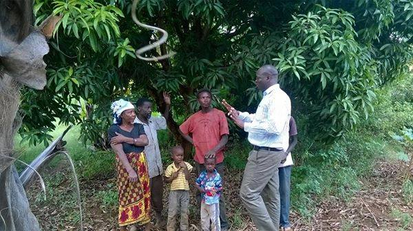

Focus Groups
-
Rural Smallholder Farmers
We help farmers to access key online Agricultural information that help them to reduce wastage, increase productivity and access online market platforms.
-
Rural Youths

Even with increasing unemployment rates across Africa, the youths have been avoiding Agriculture terming it as " not cool". We faceilitate a Youth's ICT-enabled journey into profitable farming, agribusiness and provide digital literacy skills that can help them to secure employment and venture into other businesses.
-
Rural Small Scale Traders

We also enable Rural Small scale traders to harness the power of Information Technologies to improve Commerce, create employment and spur Rural Social Economic Developemnt.